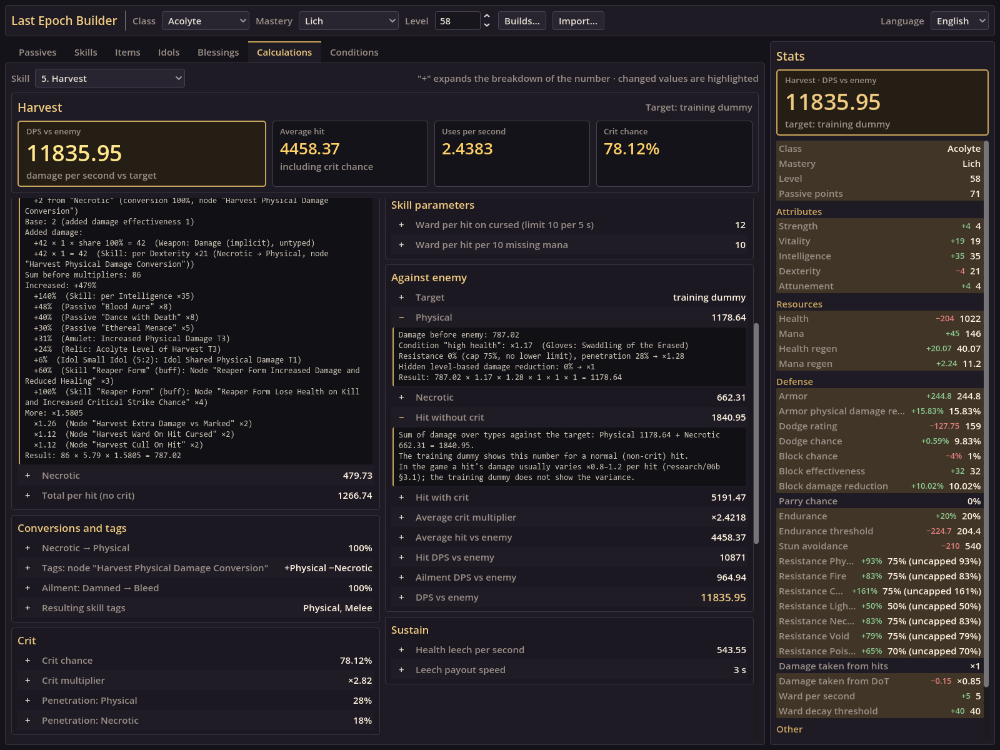
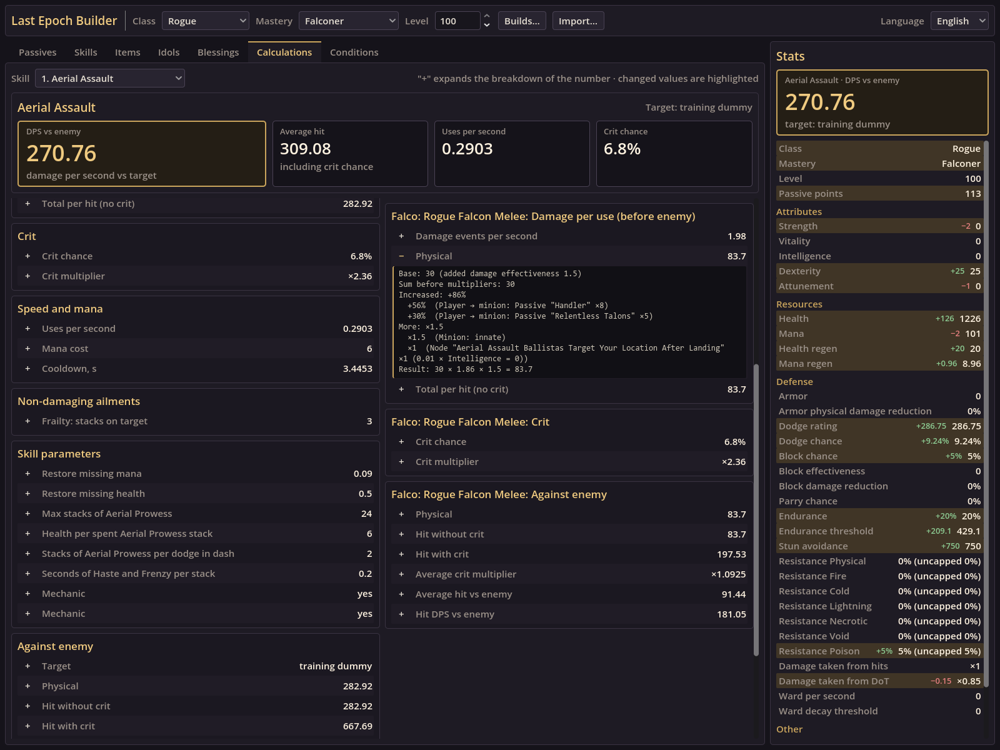
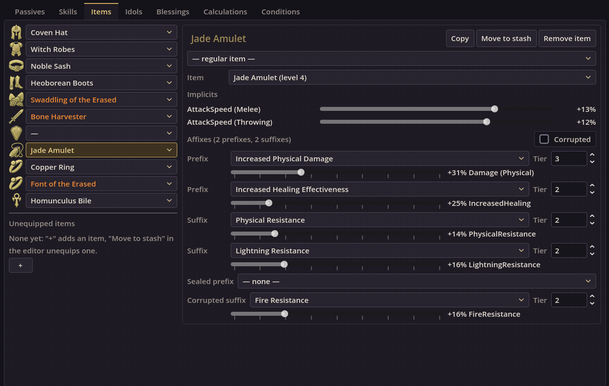

Exact skill numbers
The Calculations tab shows the selected skill: DPS against the enemy, average hit, uses per second and crit chance, then damage per use, conversions, crit, speed and mana, ailments, skill parameters from the tree, damage against the enemy and sustain.
Press + next to any number to see its full breakdown: base damage, every added, increased and more modifier with its source (passive, item, idol, tree node, buff), the enemy's resistances and penetration. Hits match the in-game training dummy.

Minion damage
Every minion attack is its own damage component with damage per use, crit and damage against the enemy, and the skill's DPS includes it.
Pick a skill that summons or uses minions in Calculations and expand a number: the minion's base damage, the player stats transferred to the minion, its innate modifiers and the skill tree nodes are listed one by one.

Live stat diff while editing items
Change a base, an implicit roll or an affix tier and roll: until you press Save, the editor shows what the change would give — DPS of the selected skill and every character stat — updated while the slider moves.
Open Items and pick a slot. Hovering an item in a slot's dropdown shows the same diff for equipping it; idols and blessings have it too.

Import your build
Last Epoch Builder loads builds from Last Epoch Tools planner links. To get a link to your character:
- Open the Last Epoch Tools planner and press the import button in the left toolbar.
- Online character: enter your account and character name. Offline character: upload its save file from
C:\Users\<user>\AppData\LocalLow\Eleventh Hour Games\Last Epoch\Saves. - Press Save/Share in the left menu and copy the link. Build guides usually link to the planner too.
- In Last Epoch Builder press Import…, paste the link and press Load.